Portfolio
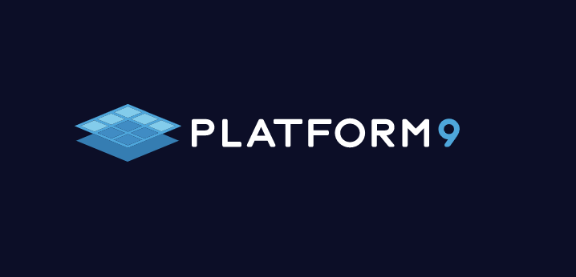
Internship
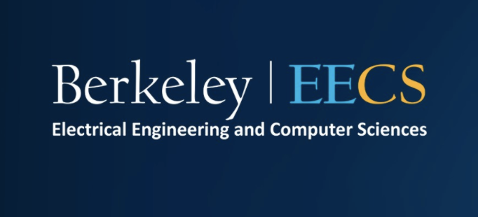
Course Staff
Computer Architecture Research
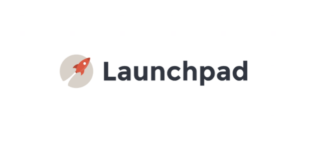
Machine Learning Developer
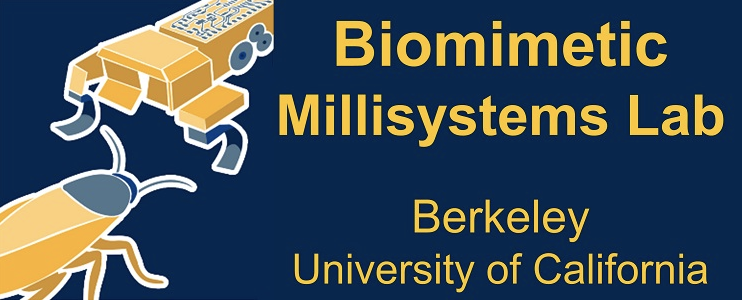
Multi-Robot Cooperation
Research Assistant

I worked in a group of undergraduate researchers within the Biomimetic Millisystems Lab on multi-robot cooperation. We used tools such as VREP, CAD, and physical robots to test and improve path planning, cooperation, and task completion abilities of a group of connected robots.
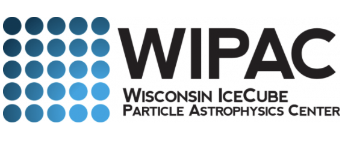
Data Analytics Intern
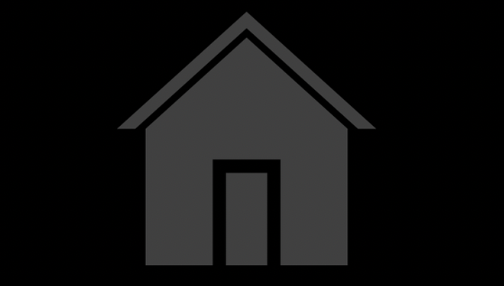
Startup Internship
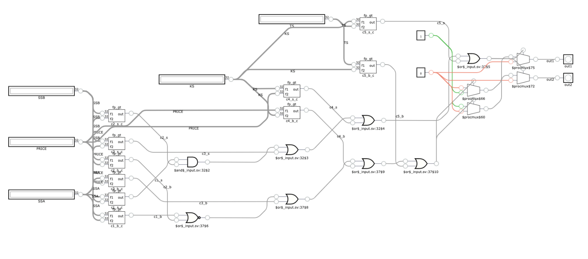
Verilog Generator for HFT
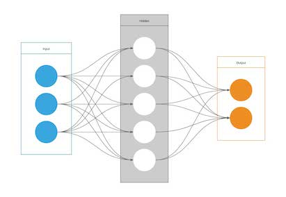
Java ANN Library
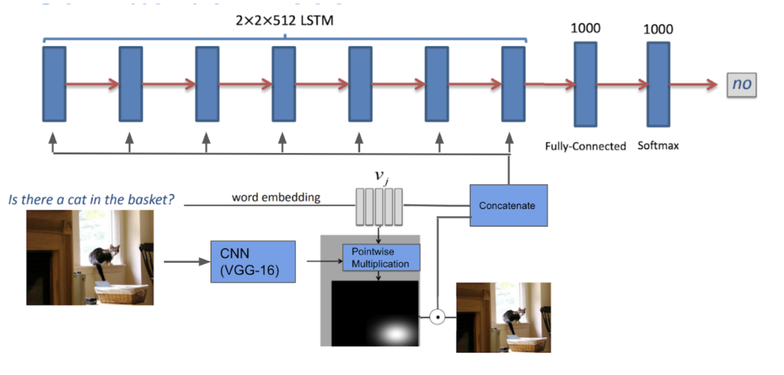
Visual Q/A System
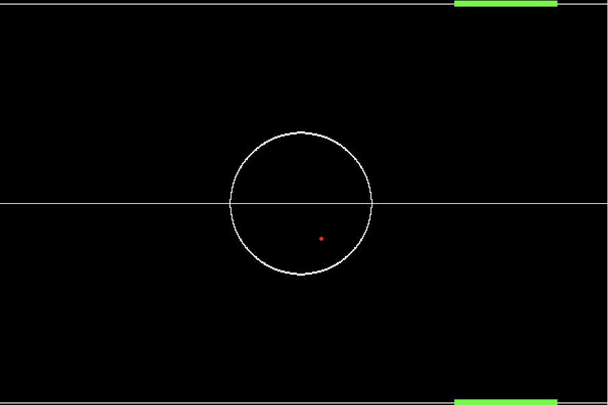
Emergent Behavior in RL
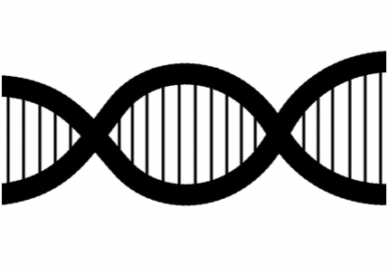
Ancestral Tracing (Moorjani Lab)
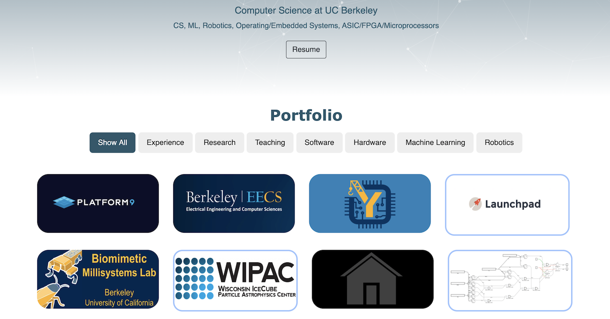
Web Dev